LIMIAR2
Com o lançamento da Limiar 1, e a consequente divulgação nas redes sociais da mesma, pelos alunos, docentes e discentes da Escola, foi recebido um convite/pedido de ajuda do Leça Futebol Clube, SAD para levar a camisola oficial do clube, para a época 2025/26, à estratosfera.
Dada a disponibilidade dos elements do CATI e atendendo à data prevista do lançamento foi possível congregar esforços e apostar nesta nova missão, apostando na recolha de dados e no voo na satisfação do acordado com o clube.
Lançamento
O lançamento foi realizado no dia 21 de julho de 2025, em Touguinhó (41,368058; -8,695440), Vila do Conde, pelas 8h20.

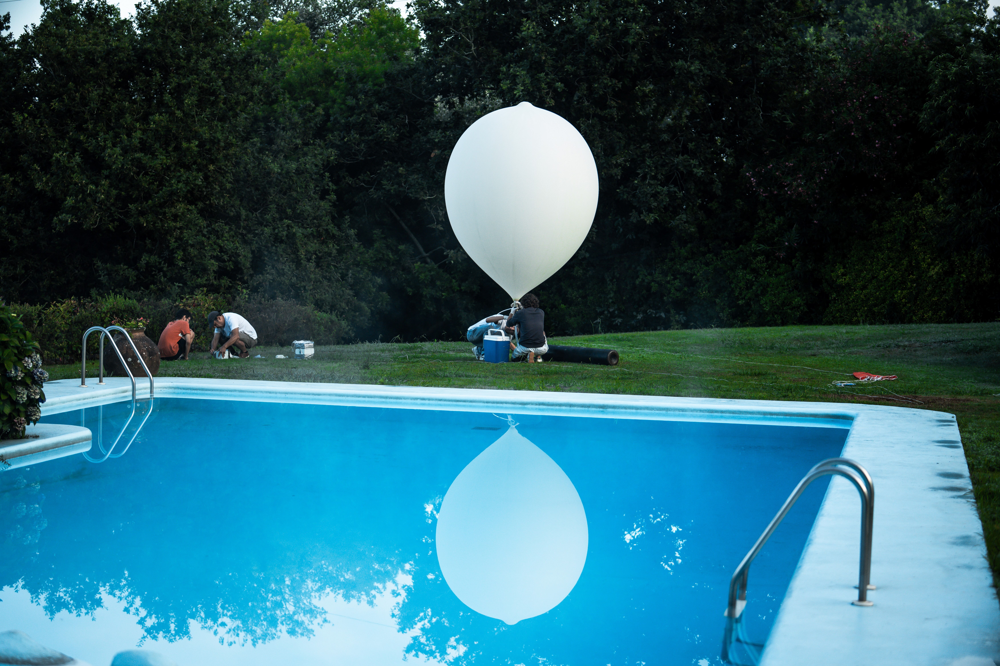
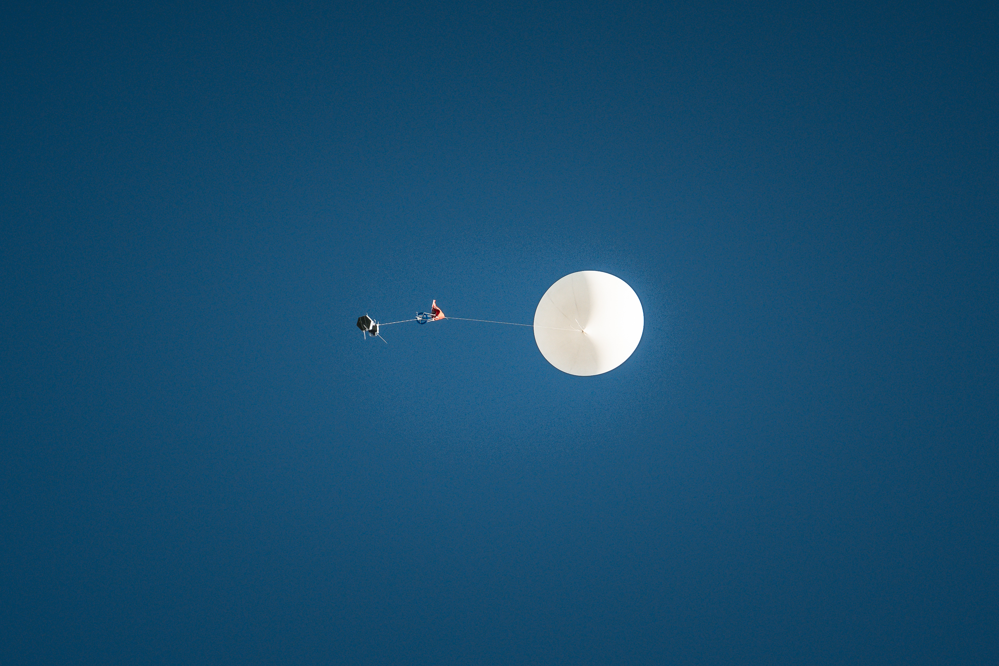

Missão
Descrição Geral
[Substitui este parágrafo pelo texto da tua Descrição Geral. Podes falar sobre o contexto da missão Limiar 2, as parcerias envolvidas e o propósito principal do voo na estratosfera.]
blablabla
Objetivos Gerais
A missão teve como objetivos:
- Traçar o perfil vertical de pressão, temperatura e humidade relativa do ar atmosférico;
- Traçar o perfil vertical de ozono;
- Traçar o perfil da temperatura dentro do payload na subida e na descida;
- Levar a camisola oficial do Leça Futebol Clube, SAD, à máxima altitude possível;
- Registar o voo do balão com câmara 360º.
Desenvolvimento
Foi utilizado um payload hexagonal, de dimensões ????, para a carga instrumentada, sendo inserida no topo a camisola do Leça Futebol Clube, SAD, protegida por uma placa de acrílico.
Considerando a necessidade de filmar a camisola, foi construído um payload menor, para albergar a câmara 360° e a powerbank, de dimensões 175 x150x65 mm. Numas das faces, aberta, foi instalada uma caixa de acrílico na qual foi montada a câmara, para realizar o filme do voo.
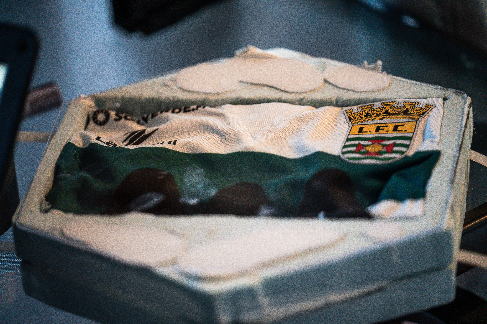
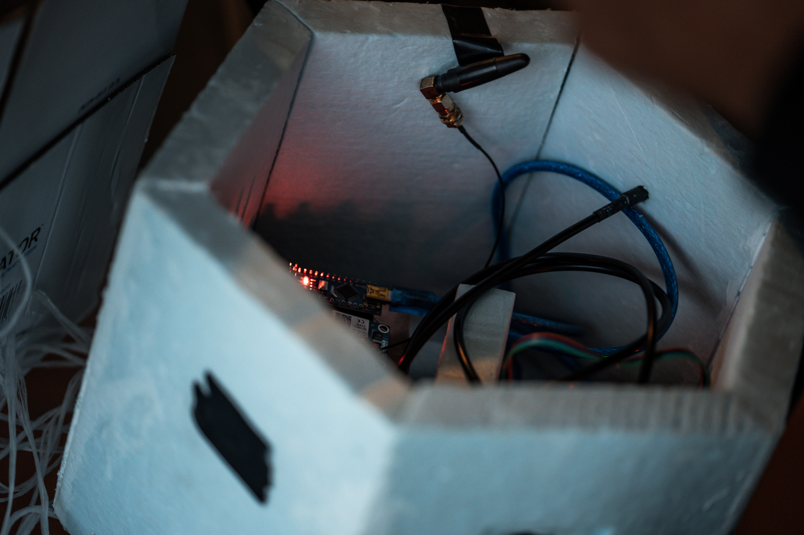
Instrumentação
A carga útil instrumentada incluiu, além do Arduino Uno, o acelerómetro/giroscópio/magnetómetro – MPU9250, o sensor de pressão e temperatura – BMP280, o sensor de temperatura e humidade relativa – DHT22, o sensor de temperatura exterior – sensor DS18B20, Gravity sensor de ozono, soldados numa placa de circuito impresso (PCB) projectada e executada numa CNC entretanto adquirida.
Os dados foram armazenados num cartão microSD.
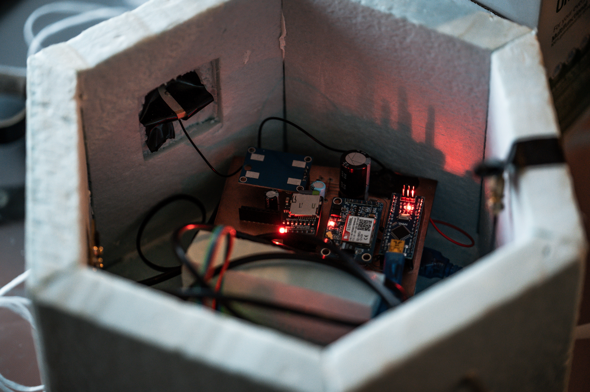
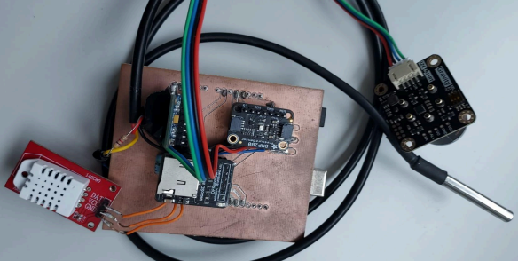
O Balão
O balão utilizado foi o balão meteorológico 3000, da empresa StratoFlights GmbH&Co. KG, com massa de 3000 g, de borracha natural e latex, capaz de suportar condições climatéricas agrestes até uma altitude máxima aproximada de 40000 m, apresentando um diâmetro médio de 14 m na altura do rebentamento. A velocidade de subida recomendada foi de 4 a 5 m/s e a carga máxima recomendada é de 3000 g.
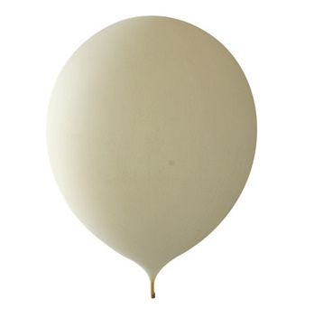
Testes
Preparação
[Espaço destinado ao texto sobre o processo de preparação e montagem do balão estratosférico LIMIAR2.]
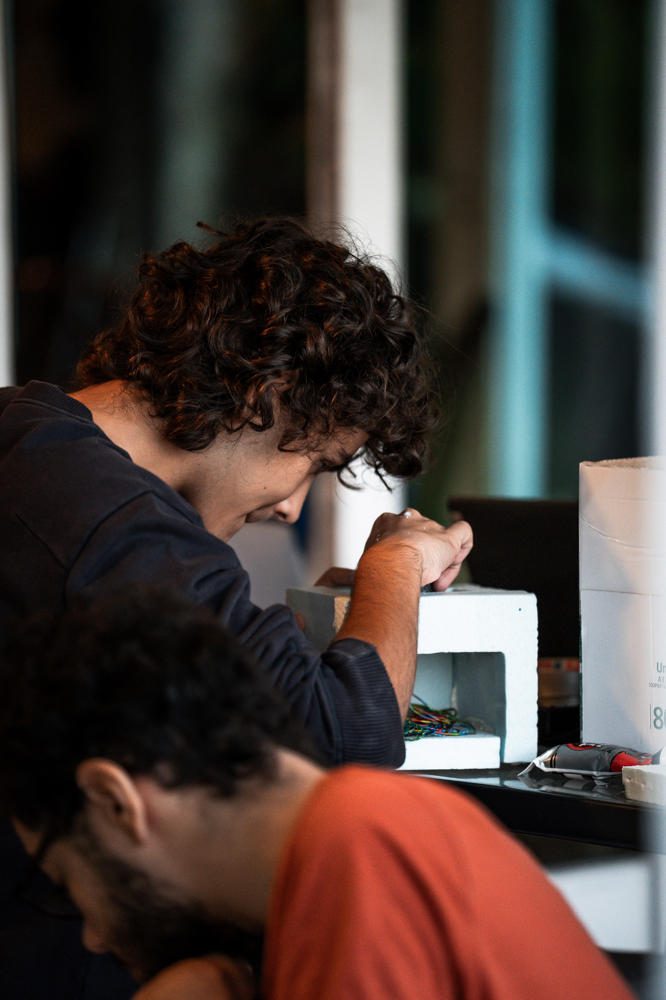
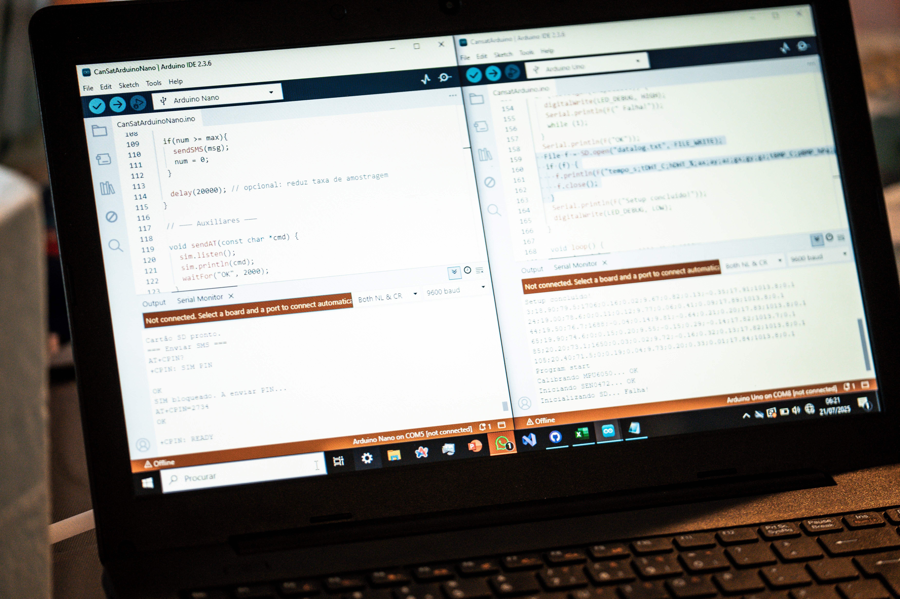
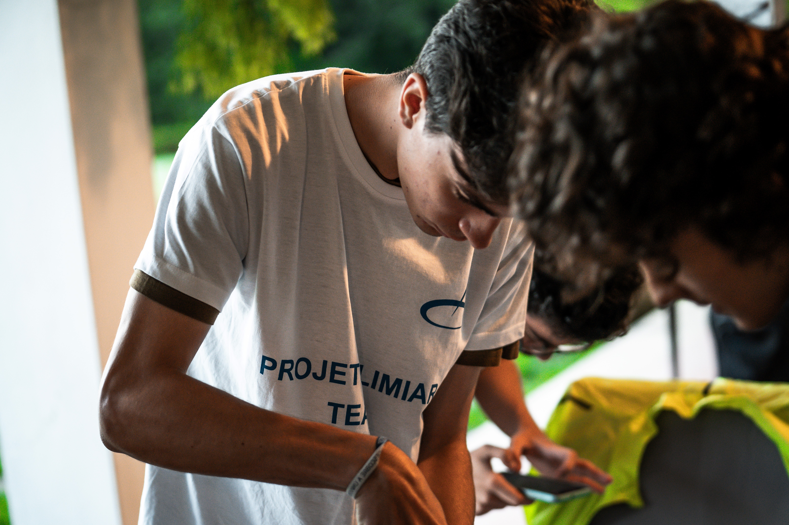
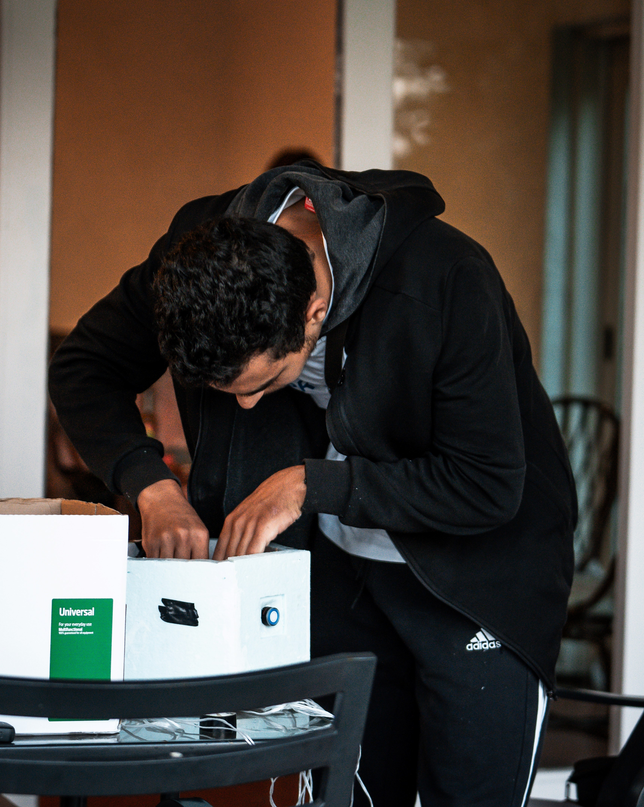
Calibrações
O sistema foi inicializado antes do lançamento e colocado em serviço, durante um certo tempo (colocar quanto). Durante este período, registou os valores medidos, tendo-se obtido duas amostragens diferentes, uma com 24 elementos e outra com 34 elementos.
Com os valores medidos, para cada amostra, foi calculada a média e o desvio-padrão respetivos.
Aplicou-se de seguida ..., como se mostra de seguida.

Face aos valores obtidos conclui-se que...
Dados
Dados Brutos
Apresenta-se de seguida o ficheiro txt com o conjunto de dados recolhidos durante o voo do balão.
📥 Download Dados
Gráficos
A variação da pressão com o tempo de voo mostra a diferença de altitudes entre o ponto de lançamento (~30 m de altitude) e o ponto de queda (~490 m de altitude), bem como evidencia o apogeu.
É evidente o decréscimo da pressão durante a subida, tornando-se mais lento à medida que se aproxima do apogeu. Após este, verifica-se que....

A altitude foi determinada utilizando todas as grandezas medidas - pressão, temperatura e humidade relativa - através do acréscimo de altitude verificado entre dois pontos consecutivos. De seguida, fez-se corresponder a cada ponto, a altitude correspondente, a partir do nível do mar.
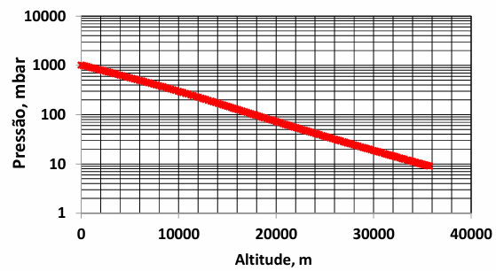
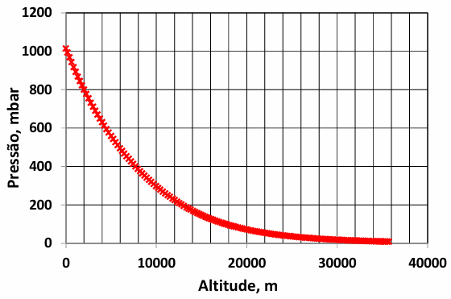
Gráfico descritivo do perfil térmico atmosférico ao longo da subida e descida da sonda.
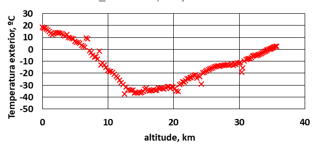